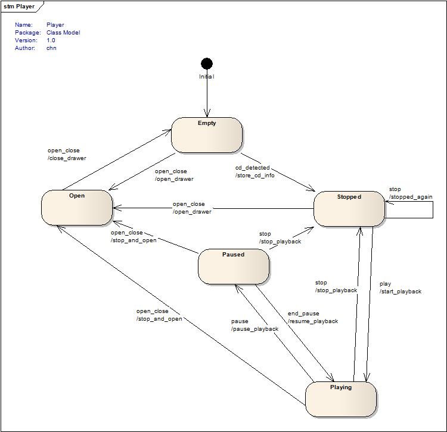
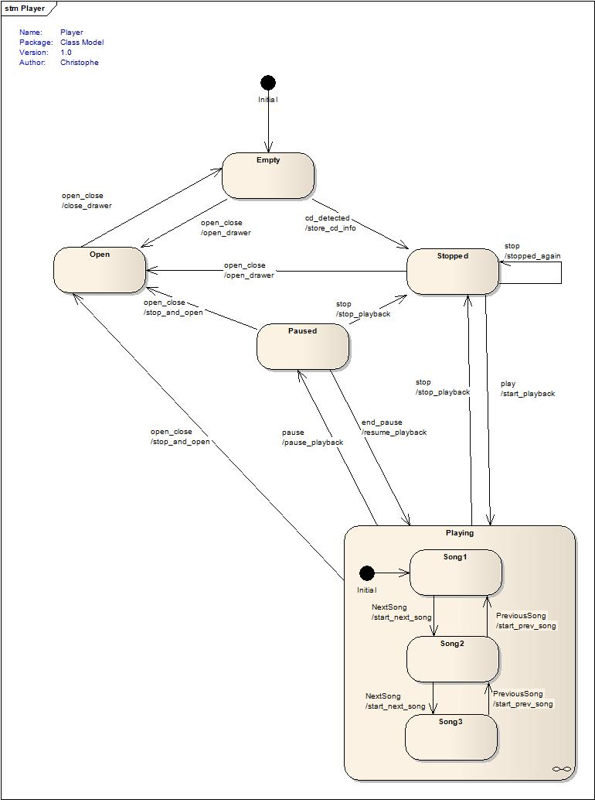
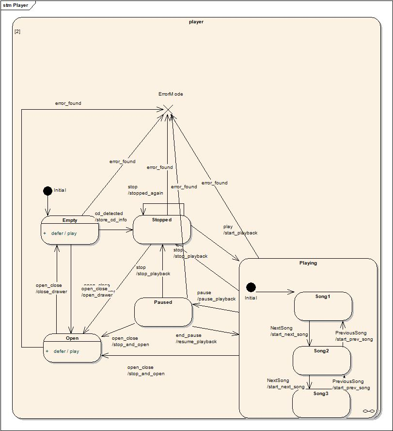
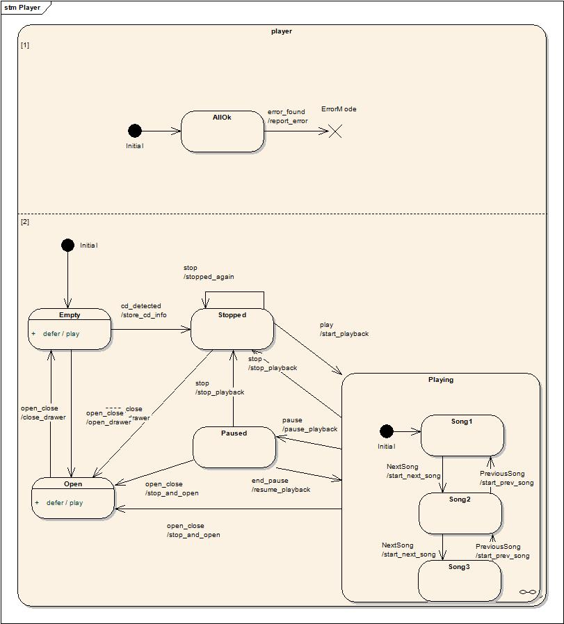
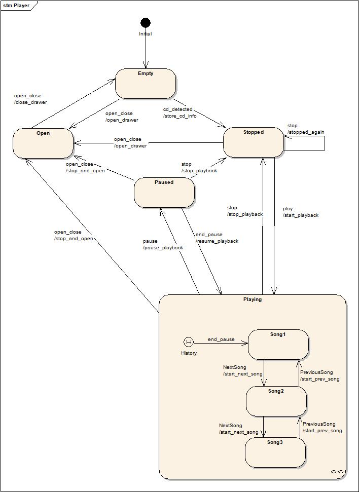
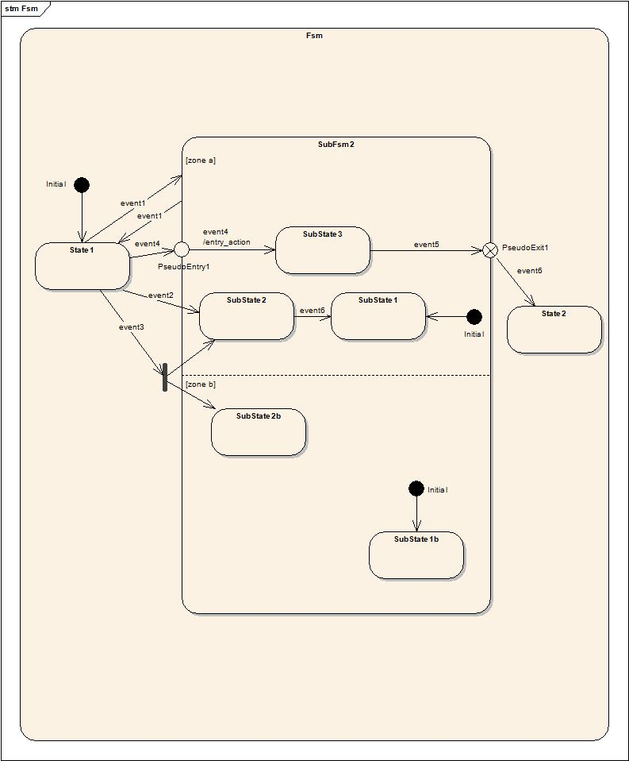
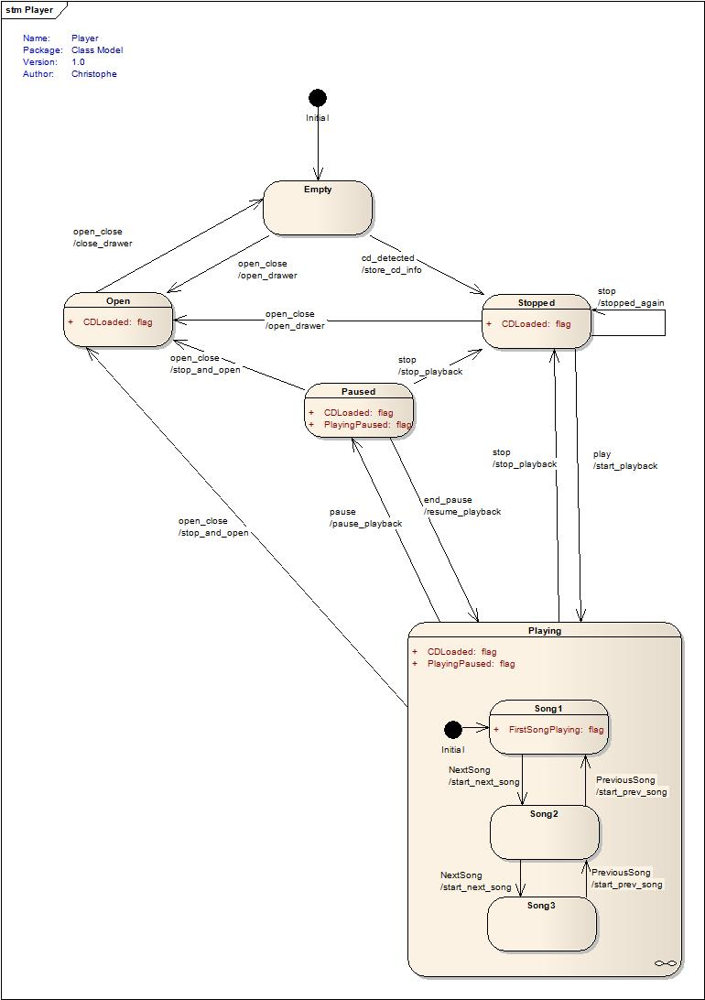
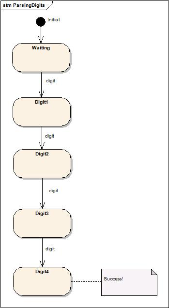

Basic 前端
这是从 MPL book 承袭而来的历史前端. 它提供的转移表由名称和功能各异的行组成. 动作和守卫定义为方法, 并通过指针在转移中引用. 该前端提供了简单的接口, 让简单的状态机易于定义, 但较复杂的状态机则稍难一些.
一个简单的示例
让我们看看创始示例的状态机图:

转移表
如前所述, MSM 基于转移表, 那么我们来定义一个:
struct transition_table : mpl::vector<
// Start Event Target Action Guard
// +---------+------------+-----------+---------------------------+----------------------------+
a_row< Stopped , play , Playing , &player_::start_playback >,
a_row< Stopped , open_close , Open , &player_::open_drawer >,
_row< Stopped , stop , Stopped >,
// +---------+------------+-----------+---------------------------+----------------------------+
a_row< Open , open_close , Empty , &player_::close_drawer >,
// +---------+------------+-----------+---------------------------+----------------------------+
a_row< Empty , open_close , Open , &player_::open_drawer >,
row< Empty , cd_detected, Stopped , &player_::store_cd_info , &player_::good_disk_format >,
row< Empty , cd_detected, Playing , &player_::store_cd_info , &player_::auto_start >,
// +---------+------------+-----------+---------------------------+----------------------------+
a_row< Playing , stop , Stopped , &player_::stop_playback >,
a_row< Playing , pause , Paused , &player_::pause_playback >,
a_row< Playing , open_close , Open , &player_::stop_and_open >,
// +---------+------------+-----------+---------------------------+----------------------------+
a_row< Paused , end_pause , Playing , &player_::resume_playback >,
a_row< Paused , stop , Stopped , &player_::stop_playback >,
a_row< Paused , open_close , Open , &player_::stop_and_open >
// +---------+------------+-----------+---------------------------+----------------------------+
> {};你会注意到, 这几乎就是创始示例的原样. 转移表中唯一的变化是转移 (行) 的类型不同. 创始示例强制定义一个动作方法, 且不提供守卫. 你有 4 种基本的行类型:
-
row接收 5 个参数: 起始状态、事件、目标状态、动作和守卫. -
a_row(``a'' 表示 action) 允许只定义动作而省略守卫条件. -
g_row(``g'' 表示 guard) 允许省略动作行为而只定义守卫. -
_row允许同时省略动作和守卫.
动作方法的签名为 void method_name (event const&), 例如:
void stop_playback(stop const&) {...}动作方法不返回任何值, 并以 const 引用接收参数. 当然, 没有什么能阻止你对多个事件使用同一个动作:
template <class Event> void stop_playback(Event const&) {...}守卫唯一的区别是返回值, 它是布尔类型:
bool good_disk_format(cd_detected const& evt) {...}定义带入口/出口动作的状态
在 MPL book 中状态是枚举, 而现在它们是类, 这使它们可以持有数据、提供入口/出口行为, 并且可复用 (因为它们对所属状态机一无所知). 要定义状态, 请继承所需的状态类型. 你主要会用到简单状态:
struct Empty : public msm::front::state<> \{};
它们还可以选择性地提供入口和出口行为:
struct Empty : public msm::front::state<>
{
template <class Event, class Fsm>
void on_entry(Event const&, Fsm& )
{std::cout <<"entering: Empty" << std::endl;}
template <class Event, class Fsm>
void on_exit(Event const&, Fsm& )
{std::cout <<"leaving: Empty" << std::endl;}
};注意入口和出口行为是如何针对事件与状态机模板化的. 通用性便于复用. 还有更多状态类型 (terminate、interrupt、伪状态等) 对应 UML 标准的状态类型. 后续各节将详细描述它们.
动作 / 守卫中你实际在做什么?
状态机定义了结构和完整行为的重要部分, 但并非全部. 例如, 如果需要向 Alpha Centauri 发射火箭, 可以有一条转移到 "SendRocketToAlphaCentauri" 状态的转移, 但没有真正发射火箭的代码. 这正是需要动作的地方. 一个简单的动作可以是:
template <class Fire> void send_rocket(Fire const&)
{
fire_rocket();
}好, 这很简单. 现在, 我们可能想给出一个方向. 假设这一信息在需要时从外部给出, 那么用事件来传递就顺理成章:
// Event
struct Fire {Direction direction;};
template <class Fire> void send_rocket(Fire const& evt)
{
fire_rocket(evt.direction);
}我们可能希望不仅根据外部数据、还根据此前工作中积累的数据来计算方向. 这时, 你可能希望把这些数据放在状态机自身中. 由于转移动作是前端的成员, 你可以直接访问这些数据:
// Event
struct Fire {Direction direction;};
//front-end definition, see down
struct launcher_ : public msm::front::state_machine_def<launcher_>
{
Data current_calculation;
template <class Fire> void send_rocket(Fire const& evt)
{
fire_rocket(evt.direction, current_calculation);
}
...
};入口和出口动作表示某个状态共有的行为, 无论它是通过哪条转移进入或离开的. 状态可复用, 因此把数据放在状态里而不是状态机中, 可能更有利于最大化复用并让代码更易读. 入口和出口动作可以访问状态数据 (它们是状态的成员), 也可以像转移动作一样访问事件和状态机. 这通过 Event 和 Fsm 模板参数实现:
struct Launching : public msm::front::state<>
{
template <class Event, class Fsm>
void on_entry(Event const& evt, Fsm& fsm)
{
fire_rocket(evt.direction, fsm.current_calculation);
}
};当状态变为非活动时, 出口动作也非常适合做清理工作.
入口动作的另一种可能用途是向子状态/子状态机传递数据. Launching 是一个含有 data 属性的子状态:
struct launcher_ : public msm::front::state_machine_def<launcher_>
{
Data current_calculation;
// state machines also have entry/exit actions
template <class Event, class Fsm>
void on_entry(Event const& evt, Fsm& fsm)
{
launcher_::Launching& s = fsm.get_state<launcher_::Launching&>();
s.data = fsm.current_calculation;
}
...
}; set_states 后端方法允许你替换一个完整的状态.
functor 前端与 eUML 提供更多能力.
不过, 这个 basic 前端借助 row2 / irow2 转移也具有特殊能力. _row2, a_row2, row2, g_row2, a_irow2, irow2, g_irow2 让你可以调用位于当前 fsm 任意状态或前端自身中的动作, 从而让你把有用的数据放到任何合适的地方.
有时需要在动作中为状态机生成新事件. 由于 process_event 方法属于后端, 首先需要获得对它的引用. 后端派生自前端, 因此一种方法是使用强制转换:
struct launcher_ : public msm::front::state_machine_def<launcher_>
{
template <class Fire> void send_rocket(Fire const& evt)
{
fire_rocket();
msm::back::state_machine<launcher_> &fsm = static_cast<msm::back::state_machine<launcher_> &>(*this);
fsm.process_event(rocket_launched());
}
...
};同样的做法也可以在入口/出口动作中实现. 诚然, 这有点别扭. 使用 functor 前端则有一个更自然的机制.
定义一个简单的状态机
声明状态机非常直接, 信噪比很高. 在我们的播放器示例中, 我们这样声明状态机:
struct player_ : public msm::front::state_machine_def<player_>
{
/* see below */
}这声明了一个使用 basic 前端的状态机. 现在我们在状态机结构内部声明初始状态:
typedef Empty initial_state;这基本就是绝对必需的全部内容. 示例中为可读性把状态声明在状态机内部, 但这并非要求, 状态可以在任何你喜欢的地方声明.
剩下的就是选择一个后端 (这相当简单, 因为目前只有一个):
typedef msm::back11::state_machine<player_> player;现在你有了一个开箱即用的状态机, 它带入口/出口动作、守卫、转移动作, 还带一个消息队列, 使处理一个事件可以生成另一个事件. 状态机还根据你的需要进行了自适应, 移除了这个简单示例中几乎用不到的所有特性. 注意, 这默认并不是可能的最快状态机. 要了解如何获得最高速度, 请参阅 "getting more speed" 一节. 简言之, MSM 无法得知你对某些特性的使用情况, 所以必须由你显式告知.
状态对象随状态机自动构建, 并将一直存在到状态机销毁.
当触发一个意外事件时, 状态机的 no_transition(event, state machine, state id) 方法会被调用. 默认情况下, 该方法被调用时只是进行断言. 可以重写 no_transition 方法来定义不同的处理方式:
template <class Fsm,class Event>
void no_transition(Event const& e, Fsm& ,int state) {...}注释: 你可能注意到, 教程在状态机创建后立即对其调用 start(). start 方法将启动状态机, 即激活初始状态, 这又意味着将调用初始状态的入口行为. 需要这样做的原因将在后端部分中解释. 调用 start 之后, 状态机就准备好处理事件了. 同样, 调用 stop() 会使最后一批出口动作被调用.
定义子状态机
现在我们想扩展上一个状态机, 把 Playing 状态本身变成一个状态机 (子状态机).

子状态机确实就是一个状态机, 因此我们就这样声明 Playing, 选择一个前端和一个后端:
struct Playing_ : public msm::front::state_machine_def<Playing_> {...}
typedef msm::back11::state_machine<Playing_> Playing;与任何状态机一样, 还需要转移表和初始状态:
struct transition_table : mpl::vector<
// Start Event Target Action Guard
// +--------+-------------+--------+---------------------------+------+
a_row< Song1 , NextSong , Song2 , &Playing_::start_next_song >,
a_row< Song2 , PreviousSong, Song1 , &Playing_::start_prev_song >,
a_row< Song2 , NextSong , Song3 , &Playing_::start_next_song >,
a_row< Song3 , PreviousSong, Song2 , &Playing_::start_prev_song >
// +--------+-------------+--------+---------------------------+------+
> {};
typedef Song1 initial_state;需要做的基本就这些. MSM 现在会自动把 Playing 识别为子状态机, 并且每当该状态处于活动状态, Playing 处理的所有事件 (NextSong 和 PreviousSong) 都会自动转发给 Playing. 后文描述的所有其他状态机特性同样可用. 你甚至可以让一个状态机有时作为子状态机、有时作为独立状态机来使用.
不过子状态机有一个限制. 如果子状态机的子状态有一个需要特殊事件属性 (例如某个给定方法) 的入口动作, 编译器会要求进入该子状态机的所有事件都支持该属性. 由于这并不可行, 我们需要借助 boost::enable_if / boost::disable_if, 例如考虑:
// define a property for use with enable_if
BOOST_MPL_HAS_XXX_TRAIT_DEF(some_event_property)
// this event supports some_event_property and a corresponding required method
struct event1
{
// the property
typedef int some_event_property;
// the method required by this property
void some_property(){...}
};
// this event does not support some_event_property
struct event2
{
};
struct some_state : public msm::front::state<>
{
template <class Event,class Fsm>
// enable this version for events supporting some_event_property
typename boost::enable_if<typename has_some_event_property<Event>::type,void>::type
on_entry(Event const& evt,Fsm& fsm)
{
evt.some_property();
}
// for events not supporting some_event_property
template <class Event,class Fsm>
typename boost::disable_if<typename has_some_event_property<Event>::type,void>::type
on_entry(Event const& ,Fsm& )
{ }
};现在这个状态就可以在你的子状态机中使用了.
正交区域、终止状态、事件延迟
在许多状态机中, 错误处理都是很常见的问题. 通常需要定义从所有状态到某个特殊错误状态的转移. 说白了: 不好玩. 要找出错误源自哪个状态也不实际. 下图展示了一个明显变得不太可读的例子:

幸运的是, UML 提供了一个有用的概念: 正交区域. 可以把它们看作在同一个状态机内部同时运行的轻量级状态机, 并且能够相互影响. 其效果是任何时刻都有多个活动状态. 因此我们可以保留上一个示例中的状态机, 只需定义一个由 AllOk 和 ErrorMode 两个状态组成的新区域. AllOk 在大多数时间处于活动状态. 而 error_found 错误事件会使第二个区域切换到新的活动状态 ErrorMode. 该事件与主区域无关, 因此会被直接忽略. “no_transition” 只有在完全没有区域处理该事件时才会被调用. 而且, 正如 UML 所要求, 每个区域都有机会处理该事件, 顺序由 initial_state 类型声明所规定.
添加正交区域很容易, 只需在 initial_state typedef 中声明更多状态即可. 因此, 添加一个以 AllOk 为该区域初始状态的新区域就是这样:
typedef mpl::vector<Empty,AllOk> initial_state;
最后同样重要的一点是, 这个示例在这里也展示了事件延迟的处理. 假设有人放入一张光盘并立即按下播放. 该事件无法被处理, 但你希望它稍后得到处理, 而不是强迫用户再按一次播放. 解决办法是把它在 Empty 和 Open 状态中定义为延迟, 并在第一个不需要延迟该事件的状态中处理它. 届时它可以被处理或拒绝. 在本示例中, 当 Stopped 变为活动状态时, 该事件将被处理, 因为只有 Empty 和 Open 延迟该事件.
UML 把事件延迟定义为状态的属性. 为支持这一点, MSM 允许你在状态中通过提供 deferred_events 类型来指定它:
struct Empty : public msm::front::state<>
{
// if the play event is fired while in this state, defer it until a state
// handles or rejects it
typedef mpl::vector<play> deferred_events;
...
};请查看完整示例.
虽然这是 UML 所要求且做法简单, 但并不总是实用, 因为人们可能只想在某些条件下延迟. 也可能希望把它作为转移动作的一部分, 再加上守卫以实现更复杂的行为. 把尽可能多的内容放进转移表 (在那里你可以看到整个状态机结构) 也符合 MSM 的理念. 用这个前端也可以做到, 但并不实用, 因此我们需要从 functor 前端选取另一种行. Row 类型的完整描述请参见 functor front-end.
首先, 由于不存在能让 MSM 自动发现此特性用法的状态, 我们需要在状态机定义中添加一个类型, 显式要求延迟事件能力:
struct player_ : public msm::front::state_machine_def<player_>
{
typedef int activate_deferred_events;
...
};现在可以在转移表的任何转移中, 使用预定义的 msm::front::Defer 仿函数作为动作来延迟事件, 例如:
Row < Empty , play , none , Defer , none >这是一个内部转移行 (见 internal transitions), 但眼下你可以忽略这一点. 它只表示我们并不离开 Empty 状态. 重要的是我们使用 Defer 作为动作. 这与前面的语法大致等价, 但优点是把全部信息都集中在转移表中, 并额外拥有转移行为的强大能力.
第二个区别是, 由于我们现在定义了一条转移, 这条转移可以参与 transition conflicts 的消解. 例如, 我们可以建模 "if (condition2) 转到 Playing, 否则若 (condition1) 延迟 play 事件":
Row < Empty , play , none , Defer , condition1 >,
g_row < Empty , play , Playing , &player_::condition2 >请查看一种可能的实现.
历史
UML 定义了两种历史: 浅历史与深历史. 在前面的示例中, 如果播放器正在播放第二首歌, 用户按下暂停并离开 Playing, 那么下次按下播放按钮时, Playing 状态会重新激活并再次播放第一首歌. 客户的抱怨很快就会接踵而至. 他们当然会要求: 如果播放器是被暂停的, 就应该记住正在播放哪首歌; 而如果播放器是被停止的, 就应该从第一首歌重新开始. 怎么做到呢? 当然, 你可以增加一点编程逻辑并生成额外的事件, 使得从 Pause 过来时让第二首歌开始播放. 比如:
if (Event == end_pause)
{
for (int i=0;i< song number;++i) {player.process_event(NextSong()); }
}这个示例里没什么招人喜欢的地方, 不是吗? 要解决这个问题, 你要定义所谓的浅历史或深历史. 浅历史在子状态机重新变为活动时, 重新激活该子状态机最后处于活动的子状态. 深历史则递归地做同样的事: 如果该子状态机最后活动的子状态本身又是一个子状态机, 那么它的最后活动子状态也会被激活, 如此递归下去, 直到某个活动状态是普通状态. 例如, 我们来看看下面的 UML 图:

正如 small UML tutorial 中所解释的, 历史是个好概念, 但其规范并不完全令人满意. MSM 保留了概念但摒弃了规范, 转而把它做成策略, 你可以添加自己的历史类型 (参考说明了需要做什么). 此外, 历史是后端策略. 这让你可以在不同上下文中用不同的历史策略复用同一个状态机定义.
具体来说, 你的前端保持不变:
struct Playing_ : public msm::front::state_machine_def<Playing_>然后把该策略作为第二个参数加到后端:
typedef msm::back11::state_machine<Playing_,msm::back11::state_machine<player_>,
msm::back::ShallowHistory<mpl::vector<end_pause> > > Playing;这表示: 当 Playing 状态机被 end_pause 事件激活 (且仅此事件, 或添加到 mpl::vector 的任何其他事件) 时, 必须激活浅历史. 如果状态机处于 Stopped 状态且产生了 play 事件, 则不会激活历史, 普通初始状态将成为活动状态. 默认情况下, 历史是禁用的. 为方便起见, 除 ShallowHistory 之外, 库还提供了一个非 UML 标准的 AlwaysHistory 策略 (很可能是你的主要选择), 无论什么事件触发子状态机激活, 它都会激活历史. 深历史不能作为策略使用 (但可以自行添加), 原因是它会与子状态机可能定义的策略冲突. 当然, 比如若 Song1 本身也是一个状态机, 它可以自己使用 ShallowHistory 策略, 从而为自身创建深历史. 同时还提供了一个示例.
完成 (匿名) 转移
 匿名转移是没有命名事件的转移. 这意味着当前驱状态被进入时 (确切地说, 在入口动作之后), 该转移自动触发. 除此之外, 它就是带动作和守卫的普通转移. 为什么需要这种东西? 一种可能的情况是, 状态机的一部分实现了某个算法, 其中各状态就是算法实现的步骤. 这时, 使用几条带不同守卫条件的匿名转移, 你实际上就在实现某种 if/else 语句. 另一种可能的用途是按固定周期被调用且总是做同样事情 (即实现同一算法) 的实时系统. 其优点是: 一旦你知道一条转移在该系统上的执行耗时, 通过计算最长路径 (从起点到终点的转移数), 你基本就能知道算法在最坏情况下的耗时, 进而知道应向调度器申请多大的时间片.
匿名转移是没有命名事件的转移. 这意味着当前驱状态被进入时 (确切地说, 在入口动作之后), 该转移自动触发. 除此之外, 它就是带动作和守卫的普通转移. 为什么需要这种东西? 一种可能的情况是, 状态机的一部分实现了某个算法, 其中各状态就是算法实现的步骤. 这时, 使用几条带不同守卫条件的匿名转移, 你实际上就在实现某种 if/else 语句. 另一种可能的用途是按固定周期被调用且总是做同样事情 (即实现同一算法) 的实时系统. 其优点是: 一旦你知道一条转移在该系统上的执行耗时, 通过计算最长路径 (从起点到终点的转移数), 你基本就能知道算法在最坏情况下的耗时, 进而知道应向调度器申请多大的时间片.
如果你使用可执行 UML (一本好书 "Executable UML, a foundation for Model-Driven Architecture" 对此有描述), 你会注意到状态机经常给自己生成事件, 只是为了强制离开某个状态. 匿名转移使你摆脱这一束缚.
如果在具体状态机中不使用该特性, MSM 会将其停用, 你无需付出任何代价. 但如果使用它, 会有小的性能损失, 因为 MSM 会在每次转移发生后尝试触发一个复合事件 (匿名转移在 UML 中的另一个名称). 这会使事件处理成本加倍, 不过没有听起来那么糟, 因为 MSM 的执行速度本来就很高.
要定义这样的转移, 请在转移表中使用 ``none'' 作为事件, 例如:
row < State3 , none , State4 , &p::State3ToState4 , &p::always_true >该状态机图的一个实现也已提供.
内部转移
内部转移是在活动状态 (简单状态或子状态机) 作用域内执行的转移. 可以把它们看作该状态的自转移, 但不调用入口或出口动作. 当你只想在给定状态中对给定事件执行某些代码时, 这很有用.
内部转移被规定为具有高于普通转移的优先级. 这对带出口点的子状态机说得通, 但对简单状态就令人意外了. MSM 允许你通过设置转移在转移表中的位置来定义转移优先级 (见 internals). "普通" 转移与内部转移的区别在于内部转移没有目标状态, 因此我们需要新的行类型. 我们已有 a_row、g_row、_row 和 row, 现在新增 a_irow、g_irow、_irow 和 irow, 它们与普通转移类似但不定义目标状态. 例如, 带守卫条件的内部转移可以是:
g_irow < Empty /*state*/,cd_detected/*event*/,&p::internal_guard/* guard */>这些新行类型可以放在转移表的任何位置, 这样你的状态机结构仍可集中在一起. 与 UML 标准唯一的行为差异是缺少内部转移高优先级的概念. 请查看该示例.
也可以按符合 UML 的方式来做: 在状态自身内部声明一个名为 internal transition_table 的转移表, 并使用内部行类型. 例如:
struct Empty : public msm::front::state<>
{
struct internal_transition_table : mpl::vector<
a_internal < cd_detected , Empty, &Empty::internal_action >
> {};
};这声明了一个名为 internal_transition_table 的内部转移表, 它对事件 cd_detected 作出反应, 在 Empty 上调用 internal_action. 有几点值得注意:
-
内部表的名字不是 transition_table 而是 internal_transition_table.
-
它们使用不同但相似的行类型: a_internal、g_internal、_internal 和 internal.
-
这些类型以触发事件作为第一个模板参数, 然后是动作和守卫方法. 注意, 与经典行的唯一实质区别是函数指针前多出的那个参数, 它是调用该函数所针对的类型.
-
如果你愿意, 这也允许你使用来自状态机其他状态或状态机自身的动作和守卫.
-
子状态机可以同时拥有内部转移表和经典转移表.
下面的示例使用了 a_internal. 它还使用了基于仿函数的内部转移 (将在 the functor front-end 中说明), 请暂时忽略它们. 另请注意, 状态内定义的内部转移具有最高优先级 (UML 标准如此规定), 会先于状态机转移表中定义的内部转移被尝试.
该用哪种方式? 这取决于你的需求:
-
第一种方式 (使用 irow) 更简单, 编译也可能更快. 它还允许你选择内部转移的优先级.
-
第二种方式从 UML 角度看更合理, 能让状态更有用、更可复用. 它还允许你在状态机的任意状态上调用动作和守卫.
注释: 这一特性还带来了额外的可能性. 由于 internal_transition_table 转移直接添加在主状态机的转移表中, 如果你更喜欢那样, 可以像 Boost.Statechart 那样分散地定义状态机, 让状态机本身只负责用 explicit_creation 类型定义声明它想使用的状态. 这虽然不是作者最喜欢的方式, 但依然可行. 一个只用两个状态的简化示例将展示这种可能:
子状态机还有一个额外的好处: 它们可以同时拥有标准 transition_table 和 internal_transition_table (后者优先级更高). 如果你决定把一个状态扩展成完整的子状态机, 这会更容易. 它也比标准替代方案 (添加正交区域) 略快, 因为如果事件被内部表接受, 事件分发就不会继续进入子区域. 这带来 O(1) 分发而非 O(区域数) 分发. 示例用的是 eUML, 但任何前端都可以同样做到.
更多行类型
还可以编写不只使用状态机自身、也使用其包含状态的动作和守卫的转移. 这时, 不仅要指定方法指针, 还要指定调用它的对象. 这种转移行的命名并不新颖, 叫 row2. 与普通转移一样, 它有四种变体: a_row2, g_row2, _row2 and row2. 例如, 一个调用 Empty 状态中动作的转移可以是:
a_row2<Stopped,open_close,Open,Empty
/*action source*/,&Empty::open_drawer/*action*/>内部转移也具备同样的能力, 于是我们有: a_irow2, g_irow2, _irow2 and row2. 对于作为 internal_transition_table 一部分定义的转移, 可以使用前文各节中的 a_internal, g_internal, _internal, internal 行类型.
这些行类型让我们可以把状态机代码分散到各个状态中, 使其可复用且更有用. 在状态内部使用转移表也促成了这种可能. 这些新行也提供了一个示例.
显式入口 / 入口与出口伪状态 / 分叉
MSM (几乎) 完整支持这些特性 (在 small UML tutorial 中描述). 之所以说 "几乎", 是因为目前有两个限制:
-
只能显式进入目标的子状态, 而不能进入子子状态.
-
无法显式退出. 必须使用出口点.
我们来看一个具体例子:

-
由 event1 触发的 SubFsm2 ``正常'' 激活. 每个区域中初始状态被激活, 即 SubState1 和 SubState1b.
-
显式进入 SubFsm2::SubState2, 目标区域为
1'' with event2 as trigger, meaning that in region; 区域 2 的初始状态 SubState1b 被激活. -
由 event3 触发, 分叉到区域
1'' and的显式入口 SubState2 和 SubState2b. 两个状态都被激活, 因此没有区域被默认激活 (如果有第三个区域, 它会被默认激活). -
通过入口伪状态 SubFsm2::PseudoEntry1 连接两条转移, 由 event4 触发, 并在同一事件上触发第二条转移 (两条转移必须由同一事件触发). 区域 ``2'' 被默认激活, SubState1b 变为活动状态.
-
使用出口伪状态 PseudoExit1 从 SubFsm2 退出, 由 event5 触发, 并用同一事件连接两条转移. 同样, 该事件被转发给第二条转移, 且两个区域都被退出, 因为 SubFsm2 变为非活动. 注意, 如果没有定义从 PseudoExit1 出发的转移, 将检测到一个错误 (UML 标准所定义) 并调用 no_transition.
该示例也已完整实现.
这听起来复杂, 但语法很简单.
显式入口
首先, 要把一个状态定义为显式入口, 必须让它成为一个状态并把它标记为 explicit, 以区域 id 作为模板参数 (区域 id 从 0 开始, 对应 initial_state 类型序列中的第一个初始状态).
struct SubFsm2_ : public msm::front::state_machine_def<SubFsm2_>
{
struct SubState2 : public msm::front::state<> ,
public msm::front::explicit_entry(0)
{...};
...
};并把子状态机定义为:
typedef msm::back11::state_machine<SubFsm2_> SubFsm2;然后可以在以 State1 为源的转移中把它用作目标:
_row < State1, Event2, SubFsm2::direct< SubFsm2_::SubState2> > //SubFsm2_::SubState2: complete name of SubState2 (defined within SubFsm2_)这个语法值得解释一下. SubFsm2_ 是一个前端. SubState2 是一个嵌套状态, 因此有 SubFsm2_::SubState2 这样的语法. 外层状态机 (包含 State1 和 SubFsm2 的那个) 引用的是后端实例 (SubFsm2). SubFsm2::direct 表示希望进行显式进入.
-
只有当显式入口状态通过转移 (无论方向) 与某个初始状态相连时, MSM 才能找出区域索引.
-
该特性有编译期开销.
注释 (同样适用于分叉): 为了让更常见情形的编译时间可以忍受, 与初始状态不同, 那些在被进入子状态机的转移表中同样找不到的显式入口状态 (罕见情形) 不会被自动创建. 要显式创建这类状态, 需要在包含这些显式状态的状态机中添加一个简单 typedef, 给出要显式创建的状态序列, 如:
typedef mpl::vector<SubState2,SubState2b> explicit_creation;注释 (同样适用于分叉): 目前, 不能把子状态机用作显式入口的目标. 请使用入口伪状态来获得几乎相同的效果.
分叉
需要的是分叉而不是显式入口? 由于分叉是对不同区域状态的显式进入, 状态定义与显式入口相比无需改变, 只需把一列显式入口状态指定为目标:
_row < State1, Event3,
mpl::vector<SubFsm2::direct<SubFsm2_::SubState2>,
SubFsm2::direct <SubFsm2_::SubState2b>
>其中 SubState2 定义如前, SubState2b 定义为位于第二个区域 (注意: MSM 不检查区域是否正确):
struct SubState2b : public msm::front::state<> ,
public msm::front::explicit_entry(1)入口伪状态
要定义入口伪状态, 需要从对应的类派生并给出区域 id:
struct PseudoEntry1 : public msm::front::entry_pseudo_state(0)并在顶层状态机的转移表中添加相应的转移:
_row < State1, Event4, SubFsm2::entry_pt<SubFsm2_::PseudoEntry1> >再在 SubFsm2_ 子状态机定义中添加另一条 (记住, UML 把入口点定义为两条转移之间的连接), 例如这次带一个动作方法:
_row < PseudoEntry1, Event4, SubState3,&SubFsm2_::entry_action >出口伪状态
最后, 出口伪状态的用法几乎相同, 但定义方式不同: 它以要转发的事件作为模板参数 (无需区域 id):
struct PseudoExit1 : public exit_pseudo_state<event6>而且与入口伪状态一样, 需要两条转移, 一条在子状态机中:
_row < SubState3, Event5, PseudoExit1 >另一条在外层状态机中:
_row < SubFsm2::exit_pt<SubFsm2_::PseudoExit1>, Event6,State2 >重要说明 1: UML 把转移到入口伪状态后没有第二条转移、或第二条转移带守卫的情形定义为错误, 但没有定义错误处理. MSM 会容忍这种行为; 入口伪状态将直接成为新的活动状态.
重要说明 2: UML 把转移到出口伪状态后没有第二条转移的情形定义为错误, 同样没有定义错误处理. 因此, 我们决定把出口伪状态实现为终止状态, 未被正确退出的外层复合状态将保持终止, 因为它在技术上已经 ``退出''.
重要说明 3: UML 规定对于出口点, 两条转移必须使用同一事件. MSM 放宽了这一规则, 只要求内部转移上的事件可转换为外部转移的事件. 在我们的例子中, event6 可由 event5 转换而来. 注意, 转发的事件必须在出口点定义中指明. 例如, 我们可以把 event6 定义得非常简单:
struct event
{
event(){}
template <class Event>
event(Event const&){}
}; //convertible from any event注释: 如果不仅需要转换、还需要从原始事件中取一些数据, 目前有一个限制. 看这个例子:
struct event1
{
event1(int val_):val(val_) {}
int val;
}; // forwarded from exit point
struct event2
{
template <class Event>
event2(Event const& e):val(e.val){} // compiler will complain about another event not having any val
int val;
}; // what the higher-level fsm wants to get解决办法是提供两个构造函数:
struct event2
{
template <class Event>
event2(Event const& ):val(0){} // will not be used
event2(event1 const& e)):val(e.val){} // the conversion constructor
int val;
}; // what the higher-level fsm wants to get标志
这个教程专门讨论一个 UML 未定义的概念: 标志. 它在多次证明有用之后被加入 MSM. 请不要害怕, 我们说的不是由多个布尔值离奇串通而成的丑陋捷径.
如果翻看 Boost.Statechart 文档, 你会看到这段代码:
if ( ( state_downcast< const NumLockOff * >() != 0 ) &&
( state_downcast< const CapsLockOff * >() != 0 ) &&
( state_downcast< const ScrollLockOff * >() != 0 ) )虽然这样做正确且常见于许多 UML 书籍, 但当你的状态机变大、添加新状态或正交区域时, 它可能容易出错, 是一颗潜在的定时炸弹.
而最重要的是, 它掩盖了真正的问题, 即 does my
state machine’s current state define a special property''? In this
special case 我的钥匙是否处于锁定状态''? 那么让我们应用软件工程基本定理, 把抽象层次提高一级.
在播放器示例中, 假设我们需要知道播放器是否装入了 CD. 我们可以如法炮制:
if ( ( state_downcast< const Stopped * >() != 0 ) &&
( state_downcast< const Open * >() != 0 ) &&
( state_downcast< const Paused * >() != 0 ) &&
( state_downcast< const Playing * >() != 0 ))或者把这 4 个状态标记为可 CDLoaded. 在每个被标记的状态中添加一个 flag_list 类型:
typedef mpl::vector1<CDLoaded> flag_list;甚至可以定义一个标志列表, 例如在 Playing 中:
typedef mpl::vector2<PlayingPaused,CDLoaded> flag_list;这表示 Playing 同时支持这两个属性. 要检查播放器是否装入了 CD, 检查你的标志在当前状态下是否活动:
player p; if (p.is_flag_active<CDLoaded>()) ...那如果有正交区域呢? 如何判断状态机是否处于被标志的状态? 默认情况下, 代码不变, 各当前状态按 OR 组合, 即只要任一活动状态带有该标志, is_flag_active 就返回 true. 当然, 某些情况下你可能希望所有活动状态都带有该标志才算活动. 也可以对活动状态做 AND:
if (p.is_flag_active<CDLoaded,player::Flag_AND>()) ...注意. 由于晦涩的 C++ 规则, 在动作内部调用时, 正确的调用是:
if (p.template is_flag_active<CDLoaded>()) ...下图展示了教程中的标志情况.

事件层级
有些情况下需要基于事件的类别来建立转移. 文本解析就是一个例子. 假设你想解析一个字符串, 并用状态机管理解析状态. 你想解析 4 个数字, 决定为每个匹配到的数字使用一个状态. 你的状态机可能像这样:

struct digit {};
struct char_0 : public digit {};对其他数字同样处理之后, 我们现在可以触发 char_0、char_1 等事件, 这将使以 "digit" 为触发器的转移被选择执行.
一个带性能测量的示例 (取自 Boost.Xpressive 文档) 演示了这个例子. 你可能会注意到, 性能实际上非常好 (本例中甚至更好).
定制状态机 / 获得更快的速度
MSM 以高速提供许多 UML 特性, 但有时你就是需要更高的速度, 并愿意以放弃一些特性为代价. process_event 要处理多项任务:
-
检查终止/中断状态
-
处理消息队列 (供入口/出口/转移动作自行生成事件之用)
-
处理延迟事件
-
捕获异常 (或不捕获)
-
处理状态切换与动作调用
这些任务中, 只有最后一项对状态机绝对必要 (它的核心工作), 其余都是锦上添花, 却要耗费 CPU 时间. 在许多情况下这无关紧要, 但在嵌入式系统中, 这可能导致临时拼凑的状态机实现. MSM 会自行检测具体状态机是否使用了终止/中断状态和延迟事件, 未使用则将其停用. 对于另外两项, 如果不需要, 需要你在实现中予以说明. 这通过两个简单的 typedef 完成:
-
no_exception_thrown表示行为永远不会抛出异常, MSM 无需捕获任何东西. -
no_message_queue表示没有任何动作会自行生成新事件, MSM 可以为我们省去消息队列.
第三种配置可能 (在此处解释) 是使用 activate_deferred_events 手动激活延迟事件. 例如, 下面的状态机设置了全部三种配置:
struct player_ : public msm::front::state_machine_def<player_>
{
// no need for exception handling or message queue
typedef int no_exception_thrown;
typedef int no_message_queue;
// also manually enable deferred events
typedef int activate_deferred_events
...// rest of implementation
};重要说明: 由于出口伪状态要使用消息队列把事件转发到子状态机之外, 含有出口伪状态的状态机不能使用 no_message_queue 选项.
选择初始事件
状态机通过 start 方法启动. 这会使初始状态的入口行为被执行. 与每个入口行为一样, 它以导致状态被进入的事件为参数. 但状态机启动时并没有触发任何事件. 此时 MSM 发送 msm::back11::state_machine<…>::InitEvent, 这未必是你想要的默认值. 针对这种特殊情况, MSM 以 typedef 的形式提供了一种配置机制. 如果状态机的前端定义提供了指向另一个事件的 initial_event typedef, 就会使用该事件. 例如:
struct my_initial_event{};
struct player_ : public msm::front::state_machine_def<player_>
{
...
typedef my_initial_event initial_event;
};常见问题 (FAQ)
为什么我在子状态机里看不到对 no_transition(…)` 的调用?
这是由 UML 定义的优先级规则所致. 该规则说, 发生转移冲突时, 最内层状态优先级更高. 因此, 在询问内层状态之后, 还必须询问外层复合状态来处理该转移, 它可能找到一条可行的转移.
为什么我得到一个编译错误, 说编译器无法转换为函数 …Fsm::*(some_event)?
你很可能定义了一条由事件 some_event 触发的转移, 却使用了接收其他事件的守卫/动作方法.
为什么我得到诸如 "too few" 或 "too many" 模板参数之类的编译错误?
你很可能把本想只用 _row 的转移定义成了 a_row 或 g_row, 或者相反. 如果用的是 Row, 则可能意味着你漏掉了一个 "none".
为什么当我在转移表中定义超过 20 行时会得到非常长的编译错误?
MSM 在底层使用 Boost.MPL, 这是默认的最大长度. 请在包含任何 MSM 头文件之前定义以下 3 个宏:
#define BOOST_MPL_CFG_NO_PREPROCESSED_HEADERS
#define BOOST_MPL_LIMIT_VECTOR_SIZE 30 // or whatever you need
#define BOOST_MPL_LIMIT_MAP_SIZE 30 // or whatever you need为什么我会得到这个错误: "error C2977: 'boost::mpl::vector' : too many template arguments"?
第一种可能是你把转移表定义为比如 vector17 却给出了 18 个条目. 第二种是你有 17 个条目并且有一个复合状态. MSM 在底层会为复合转移表中的每个事件添加一行. 第三种是你使用了不带条目数的 mpl::vector, 但接近 MPL 默认的 50, 并且有一个复合, 从而把你推过了 50. 这时你需要 mpl/vector60/70….hpp 和一个 mpl/map60/70….hpp.
为什么在状态机中定义超过 10 个状态时会得到非常长的编译错误?
MSM 在底层使用 Boost.Fusion, 而这就是默认的最大尺寸. 请在包含任何 MSM 头文件之前定义以下宏:
#define FUSION_MAX_VECTOR_SIZE 20 // or whatever you need包含该状态的状态机 (已弃用)
MSM 为向后兼容仍然支持该特性, 但由于每个守卫/动作/入口动作/出口动作都会以参数形式获得状态机, 该特性已显过时, 并可能在未来某个时间被移除.
状态机中定义的所有状态都在状态机构造时创建. 这带来了语法噪音大幅减少的巨大优势. 代价是用户在状态的创建与访问上失去少量控制权. 但有时你需要一种让状态访问其所属状态机的办法. 基本上, 状态需要把其声明改为:
struct Stopped : public msm::front::state<sm_ptr>并提供一个 set_sm_ptr 函数: void set_sm_ptr(player* pl)
以获得指向所属状态机的指针. terminate_state / interrupt_state 以及 entry_pseudo_state / exit_pseudo_state 同样如此.